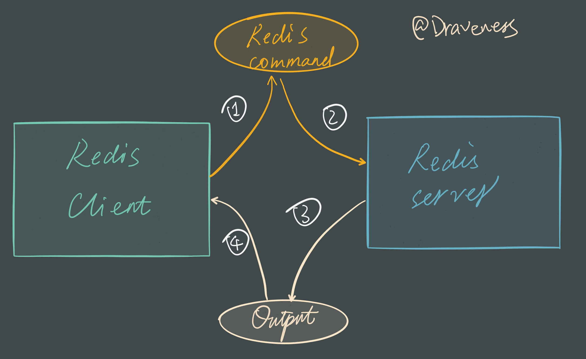
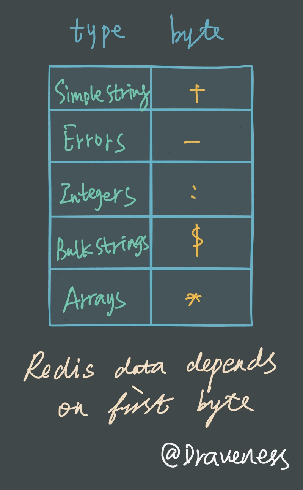
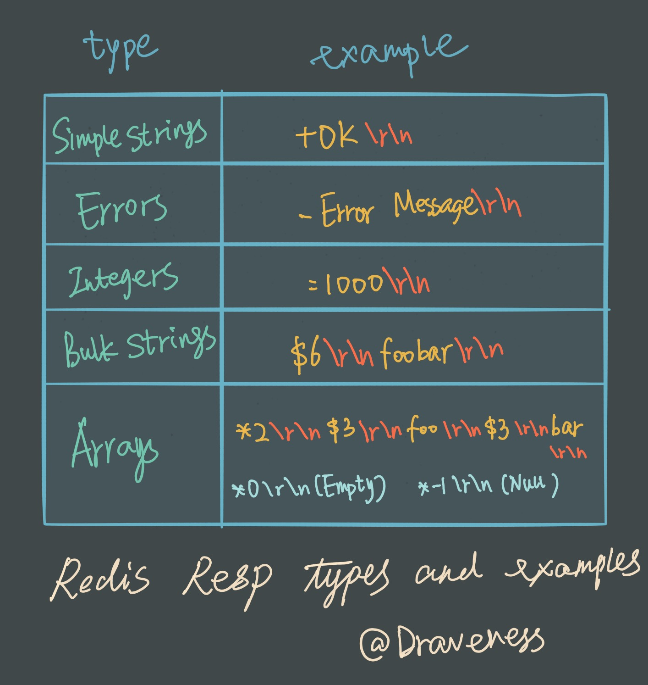
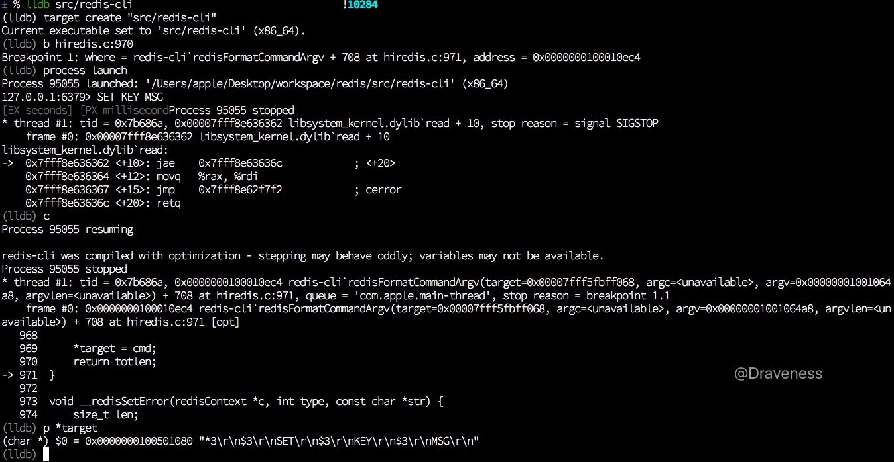
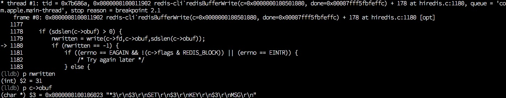
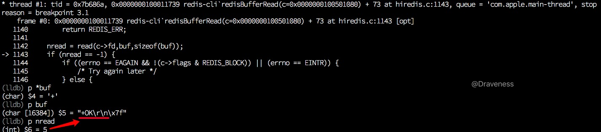
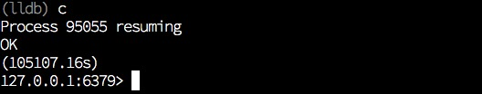
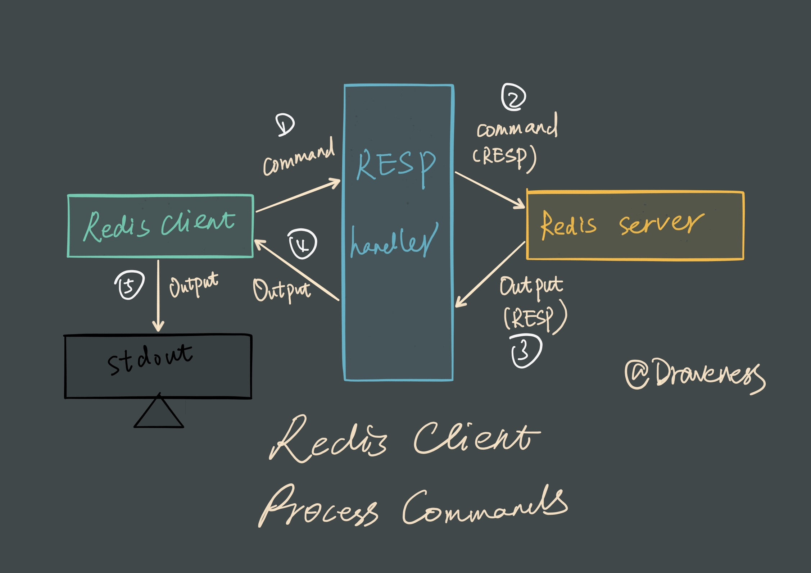

Redis 是如何处理命令的（客户端）
在使用 Redis 的过程中经常会好奇，在 Redis-Cli 中键入 SET KEY MSG 并回车之后，Redis 客户端和服务是如何对命令进行解析处理的，而在内部的实现过程是什么样的。
这两篇文章会分别介绍 Redis 客户端和服务端分别对命令是如何处理的，本篇文章介绍的是 Redis 客户端如何处理输入的命令、向服务发送命令以及取得服务端回复并输出到终端等过程。

文章中会将 Redis 服务看做一个输入为 Redis 命令，输出为命令执行结果的黑箱，对从命令到结果的过程不做任何解释，只会着眼于客户端的逻辑，也就是上图中的 1 和 4 两个过程。
从 main 函数开始
与其它的 C 语言框架/服务类似，Redis 的客户端 redis-cli 也是从 main 函数开始执行的，位于 redis-cli.c 文件的最后：
int main(int argc, char **argv) {
...
if (argc == 0 && !config.eval) {
repl();
}
...
}
在一般情况下，Redis 客户端都会进入 repl 模式，对输入进行解析；
Redis 中有好多模式，包括：Latency、Slave、Pipe、Stat、Scan、LRU test 等等模式，不过这些模式都不是这篇文章关注的重点，我们只会关注最常见的 repl 模式。
static void repl(void) {
char *line;
int argc;
sds *argv;
...
while((line = linenoise(context ? config.prompt : "not connected> ")) != NULL) {
if (line[0] != '\0') {
argv = cliSplitArgs(line,&argc);
if (argv == NULL) {
printf("Invalid argument(s)\n");
continue;
}
if (strcasecmp(argv[0],"???") == 0) {
...
} else {
issueCommandRepeat(argc, argv, 1);
}
}
}
exit(0);
}
在上述代码中，我们省略了大量的实现细节，只保留整个 repl 中循环的主体部分，方便进行理解和分析，在 while 循环中的条件你可以看到 linenoise 方法的调用，通过其中的 prompt 和 not connected> 可以判断出，这里向终端中输出了提示符，同时会调用 fgets 从标准输入中读取字符串：
127.0.0.1:6379>
全局搜一下 config.prompt 不难发现这一行代码，也就是控制命令行提示的 prompt：
anetFormatAddr(config.prompt, sizeof(config.prompt),config.hostip, config.hostport);
接下来执行的 cliSplitArgs 函数会将 line 中的字符串分割成几个不同的参数，然后根据字符串 argv[0] 的不同执行的命令，在这里省略了很多原有的代码：
if (strcasecmp(argv[0],"quit") == 0 ||
strcasecmp(argv[0],"exit") == 0)
{
exit(0);
} else if (argv[0][0] == ':') {
cliSetPreferences(argv,argc,1);
continue;
} else if (strcasecmp(argv[0],"restart") == 0) {
...
} else if (argc == 3 && !strcasecmp(argv[0],"connect")) {
...
} else if (argc == 1 && !strcasecmp(argv[0],"clear")) {
} else {
issueCommandRepeat(argc, argv, 1);
}
在遇到 quit、exit 等跟客户端状态有关的命令时，就会直接执行相应的代码；否则就会将命令和参数 issueCommandRepeat 函数。
追踪一次命令的执行
Redis Commit：
790310d89460655305bd615bc442eeaf7f0f1b38lldb： lldb-360.1.65
macOS 10.11.6
在继续分析 issueCommandRepeat 之前，我们先对 Redis 中的这部分代码进行调试追踪，在使用 make 编译了 Redis 源代码，启动 redis-server 之后；启动 lldb 对 Redis 客户端进行调试：
$ lldb src/redis-cli
(lldb) target create "src/redis-cli"
Current executable set to 'src/redis-cli' (x86_64).
(lldb) b redis-cli.c:1290
Breakpoint 1: where = redis-cli`repl + 228 at redis-cli.c:1290, address = 0x0000000100008cd4
(lldb) process launch
Process 8063 launched: '~/redis/src/redis-cli' (x86_64)
127.0.0.1:6379>
在 redis-cli.c:1290 也就是下面这行代码的地方打断点之后：
-> 1290 if (line[0] != '\0') {
执行 process launch 启动 redis-cli，然后输入 SET KEY MSG 回车以及 Ctrl-C：
在 lldb 中调试时，回车的输入经常会有问题，在这里输入 Ctrl-C 进入信号处理器，在通过 continue 命令进入断点：
127.0.0.1:6379> SET KEY MSG
^C
8063 stopped
* thread #1: tid = 0xa95147, 0x00007fff90923362 libsystem_kernel.dylib`read + 10, stop reason = signal SIGSTOP
frame #0: 0x00007fff90923362 libsystem_kernel.dylib`read + 10
libsystem_kernel.dylib`read:
-> 0x7fff90923362 <+10>: jae 0x7fff9092336c ; <+20>
0x7fff90923364 <+12>: movq %rax, %rdi
0x7fff90923367 <+15>: jmp 0x7fff9091c7f2 ; cerror
0x7fff9092336c <+20>: retq
(lldb) c
Process 8063 resuming
Process 8063 stopped
* thread #1: tid = 0xa95147, 0x0000000100008cd4 redis-cli`repl + 228 at redis-cli.c:1290, queue = 'com.apple.main-thread', stop reason = breakpoint 1.1
frame #0: 0x0000000100008cd4 redis-cli`repl + 228 at redis-cli.c:1290
1287
1288 cliRefreshPrompt();
1289 while((line = linenoise(context ? config.prompt : "not connected> ")) != NULL) {
-> 1290 if (line[0] != '\0') {
1291 argv = cliSplitArgs(line,&argc);
1292 if (history) linenoiseHistoryAdd(line);
1293 if (historyfile) linenoiseHistorySave(historyfile);
(lldb)
输入两次 n 之后，打印 argv 和 argc 的值：
(lldb) p argc
(int) $1 = 3
(lldb) p *argv
(sds) $2 = 0x0000000100106cc3 "SET"
(lldb) p *(argv+1)
(sds) $3 = 0x0000000100106ce3 "KEY"
(lldb) p *(argv+2)
(sds) $4 = 0x0000000100106cf3 "MSG"
(lldb) p line
(char *) $5 = 0x0000000100303430 "SET KEY MSG\n"
cliSplitArgs 方法成功将 line 中的字符串分隔成字符串参数，在多次执行 n 之后，进入 issueCommandRepeat 方法：
-> 1334 issueCommandRepeat(argc-skipargs, argv+skipargs, repeat);
对输入命令的处理
上一阶段执行 issueCommandRepeat 的函数调用栈中，会发现 Redis 并不会直接把所有的命令发送到服务端：
issueCommandRepeat
cliSendCommand
redisAppendCommandArgv
redisFormatCommandArgv
__redisAppendCommand
而是会在 redisFormatCommandArgv 中对所有的命令进行格式化处理，将字符串转换为符合 RESP 协议的数据。
RESP 协议
Redis 客户端与 Redis 服务进行通讯时，会使用名为 RESP（REdis Serialization Protocol） 的协议，它的使用非常简单，并且可以序列化多种数据类型包括整数、字符串以及数组等。
对于 RESP 协议的详细介绍可以看官方文档中的 Redis Protocol specification，在这里对这个协议进行简单的介绍。
在将不同的数据类型序列化时，会使用第一个 byte 来表示当前数据的数据类型，以便在客户端或服务器在处理时能恢复原来的数据格式。

举一个简单的例子，字符串 OK 以及错误Error Message 等不同种类的信息的 RESP 表示如下：

在这篇文章中我们需要简单了解的就是 RESP “数据格式”的第一个字节用来表示数据类型，然后逻辑上属于不同部分的内容通过 CRLF（\r\n）分隔。
数据格式的转换
在 redisFormatCommandArgv 方法中几乎没有需要删减的代码，所有的命令都会以字符串数组的形式发送到客户端：
int redisFormatCommandArgv(char **target, int argc, const char **argv, const size_t *argvlen) {
char *cmd = NULL;
int pos;
size_t len;
int totlen, j;
totlen = 1+intlen(argc)+2;
for (j = 0; j < argc; j++) {
len = argvlen ? argvlen[j] : strlen(argv[j]);
totlen += bulklen(len);
}
cmd = malloc(totlen+1);
if (cmd == NULL)
return -1;
pos = sprintf(cmd,"*%d\r\n",argc);
for (j = 0; j < argc; j++) {
len = argvlen ? argvlen[j] : strlen(argv[j]);
pos += sprintf(cmd+pos,"$%zu\r\n",len);
memcpy(cmd+pos,argv[j],len);
pos += len;
cmd[pos++] = '\r';
cmd[pos++] = '\n';
}
assert(pos == totlen);
cmd[pos] = '\0';
*target = cmd;
return totlen;
}
SET KEY MSG 这一命令，经过这个方法的处理会变成：
*3\r\n$3\r\nSET\r\n$3\r\nKEY\r\n$3\r\nMSG\r\n
你可以这么理解上面的结果：
*3\r\n
$3\r\nSET\r\n
$3\r\nKEY\r\n
$3\r\nMSG\r\n
这是一个由三个字符串组成的数组，数组中的元素是 SET、KEY 以及 MSG 三个字符串。
如果在这里打一个断点并输出 target 中的内容：

到这里就完成了对输入命令的格式化，在格式化之后还会将当前命令写入全局的 redisContext 的 write 缓冲区 obuf 中，也就是在上面的缓冲区看到的第二个方法：
int __redisAppendCommand(redisContext *c, const char *cmd, size_t len) {
sds newbuf;
newbuf = sdscatlen(c->obuf,cmd,len);
if (newbuf == NULL) {
__redisSetError(c,REDIS_ERR_OOM,"Out of memory");
return REDIS_ERR;
}
c->obuf = newbuf;
return REDIS_OK;
}
redisContext
再继续介绍下一部分之前需要简单介绍一下 redisContext 结构体：
typedef struct redisContext {
int err;
char errstr[128];
int fd;
int flags;
char *obuf;
redisReader *reader;
} redisContext;
每一个 redisContext 的结构体都表示一个 Redis 客户端对服务的连接，而这个上下文会在每一个 redis-cli 中作为静态变量仅保存一个：
static redisContext *context;
obuf 中包含了客户端未写到服务端的数据；而 reader 是用来处理 RESP 协议的结构体；fd 就是 Redis 服务对应的文件描述符；其他的内容就不多做解释了。
到这里，对命令的格式化处理就结束了，接下来就到了向服务端发送命令的过程了。
向服务器发送命令
与对输入命令的处理差不多，向服务器发送命令的方法也在 issueCommandRepeat 的调用栈中，而且藏得更深，如果不仔细阅读源代码其实很难发现：
issueCommandRepeat
cliSendCommand
cliReadReply
redisGetReply
redisBufferWrite
Redis 在 redisGetReply 中完成对命令的发送：
int redisGetReply(redisContext *c, void **reply) {
int wdone = 0;
void *aux = NULL;
if (aux == NULL && c->flags & REDIS_BLOCK) {
do {
if (redisBufferWrite(c,&wdone) == REDIS_ERR)
return REDIS_ERR;
} while (!wdone);
...
} while (aux == NULL);
}
if (reply != NULL) *reply = aux;
return REDIS_OK;
}
上面的代码向 redisBufferWrite 函数中传递了全局的静态变量 redisContext，其中的 obuf 中存储了没有向 Redis 服务发送的命令：
int redisBufferWrite(redisContext *c, int *done) {
int nwritten;
if (sdslen(c->obuf) > 0) {
nwritten = write(c->fd,c->obuf,sdslen(c->obuf));
if (nwritten == -1) {
if ((errno == EAGAIN && !(c->flags & REDIS_BLOCK)) || (errno == EINTR)) {
} else {
__redisSetError(c,REDIS_ERR_IO,NULL);
return REDIS_ERR;
}
} else if (nwritten > 0) {
if (nwritten == (signed)sdslen(c->obuf)) {
sdsfree(c->obuf);
c->obuf = sdsempty();
} else {
sdsrange(c->obuf,nwritten,-1);
}
}
}
if (done != NULL) *done = (sdslen(c->obuf) == 0);
return REDIS_OK;
}
代码的逻辑其实十分清晰，调用 write 向 Redis 服务代表的文件描述符发送写缓冲区 obuf 中的数据，然后根据返回值做出相应的处理，如果命令发送成功就会清空 obuf 并将 done 指针标记为真，然后返回，这样就完成了向服务器发送命令这一过程。

获取服务器回复
其实获取服务器回复和上文中的发送命令过程基本上差不多，调用栈也几乎完全一样：
issueCommandRepeat
cliSendCommand
cliReadReply
redisGetReply
redisBufferRead
redisGetReplyFromReader
cliFormatReplyRaw
fwrite
同样地，在 redisGetReply 中获取服务器的响应：
int redisGetReply(redisContext *c, void **reply) {
int wdone = 0;
void *aux = NULL;
if (aux == NULL && c->flags & REDIS_BLOCK) {
do {
if (redisBufferWrite(c,&wdone) == REDIS_ERR)
return REDIS_ERR;
} while (!wdone);
do {
if (redisBufferRead(c) == REDIS_ERR)
return REDIS_ERR;
if (redisGetReplyFromReader(c,&aux) == REDIS_ERR)
return REDIS_ERR;
} while (aux == NULL);
}
if (reply != NULL) *reply = aux;
return REDIS_OK;
}
在 redisBufferWrite 成功发送命令并返回之后，就会开始等待服务端的回复，总共分为两个部分，一是使用 redisBufferRead 从服务端读取原始格式的回复（符合 RESP 协议）：
int redisBufferRead(redisContext *c) {
char buf[1024*16];
int nread;
nread = read(c->fd,buf,sizeof(buf));
if (nread == -1) {
if ((errno == EAGAIN && !(c->flags & REDIS_BLOCK)) || (errno == EINTR)) {
} else {
__redisSetError(c,REDIS_ERR_IO,NULL);
return REDIS_ERR;
}
} else if (nread == 0) {
__redisSetError(c,REDIS_ERR_EOF,"Server closed the connection");
return REDIS_ERR;
} else {
if (redisReaderFeed(c->reader,buf,nread) != REDIS_OK) {
__redisSetError(c,c->reader->err,c->reader->errstr);
return REDIS_ERR;
}
}
return REDIS_OK;
}
在 read 从文件描述符中成功读取数据并返回之后，我们可以打印 buf 中的内容：

刚刚向 buf 中写入的数据还需要经过 redisReaderFeed 方法的处理，截取正确的长度；然后存入 redisReader 中：
int redisReaderFeed(redisReader *r, const char *buf, size_t len) {
sds newbuf;
if (buf != NULL && len >= 1) {
if (r->len == 0 && r->maxbuf != 0 && sdsavail(r->buf) > r->maxbuf) {
sdsfree(r->buf);
r->buf = sdsempty();
r->pos = 0;
assert(r->buf != NULL);
}
newbuf = sdscatlen(r->buf,buf,len);
if (newbuf == NULL) {
__redisReaderSetErrorOOM(r);
return REDIS_ERR;
}
r->buf = newbuf;
r->len = sdslen(r->buf);
}
return REDIS_OK;
}
最后的 redisGetReplyFromReader 方法会从 redisContext 中取出 reader，然后反序列化 RESP 对象，最后打印出来。

当我们从终端的输出中看到了 OK 以及这个命令的执行的时间时，SET KEY MSG 这一命令就已经处理完成了。
总结
处理命令的过程在客户端还是比较简单的：
- 在一个
while循环中，输出提示符； - 接收到输入命令时，对输入命令进行格式化处理；
- 通过
write发送到 Redis 服务，并调用read阻塞当前进程直到服务端返回为止； - 对服务端返回的数据反序列化；
- 将结果打印到终端。
用一个简单的图表示，大概是这样的：

References
Follow: Draveness · GitHub
Source: http://draveness.me/redis-cli